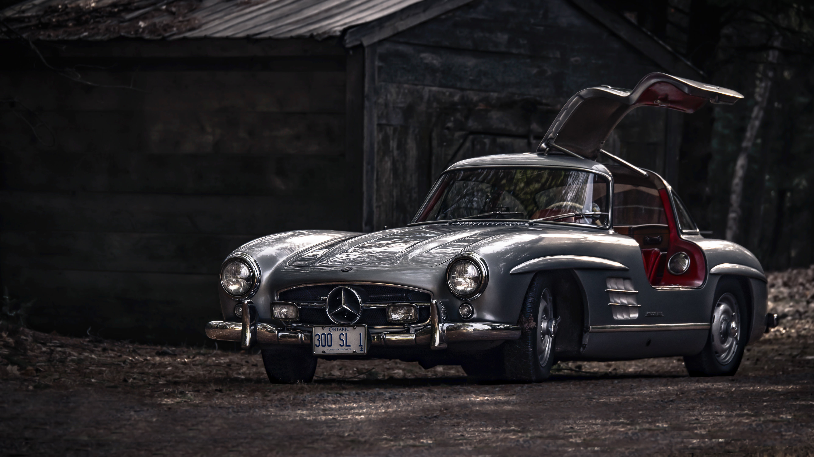

;
;
;
;
| This symbol was entered on the Register of Trademarks on 10 October 1910. Daimler‑Motoren‑Gesellschaft had already applied for legal protection for the Mercedes-Benz star on 24 June 1909. It was entered on the Register of Trademarks
on 9 February 1911. Looking back, the fact that both car makers registered their new trademarks in the summer of 1909 seems to mirror the events of 1886, since this was when Gottlieb Daimler and Carl Benz invented the car powered by the
fast-running internal combustion engine – without even having any knowledge of one Some 23 years later, the two still competing companies pointed the way ahead with their new brand symbols, by immediately using them as a badge and signet on their respective vehicles. Finally, on 18 February 1925, both brands registered their new shared logo – Daimler's Mercedes star in Benz's laurel wreath. This was a highly symbolic action in anticipation of the merger, which became effective on 28 June 1926. It was from these beginnings that the Mercedes-Benz trademark still used to this day developed. |
|
How it all Began 1834: Gottlieb Daimler:'It’s not the idea, it’s the implementation that counts.' Gottlieb Daimler is born on 17 March 1834 in Schorndorf. After training as a gunsmith and working in France, he attends the Polytechnic School in Stuttgart from 1857 to 1859. After completing various technical activities in France and England, he starts work as a draftsman in Geislingen in 1862. At the end of 1863, he is appointed workshop inspector in a machine tool factory in Reutlingen, where he meets Wilhelm Maybach in 1865. In 1872, he becomes Technical Director of the gas engine manufacturer Deutz Gasmotorenfabrik, where he becomes familiar with Otto’s four-stroke technology. After differences with the Managing Director, he leaves the company in 1882. Daimler sets up a development workshop in his greenhouse at his Cannstatt villa to concentrate on developing petrol-driven four-stroke engines. Working with Wilhelm Maybach in 1884, he develops an internal combustion engine known today as the 'Grandfather Clock'. With its compact, low-weight design, the machine forms the basis for installation in a vehicle. The costs of trial operations soon consume Daimler’s entire fortune, however, so he is obliged to find business partners. He founds 'Daimler-Motoren-Gesellschaft' on 28 November 1890 together with Max Duttenhofer and his business partner Wilhelm Lorenz. But while Duttenhofer wants to produce stationary engines, Daimler prefers to focus on vehicle production, and a dispute ensues. After Wilhelm Maybach resigns in 1891 due to unacceptable terms of contract, Daimler resorts to a ruse. He continues to build engines with Maybach, but the patents are all in his name. The increasingly tense relationship with Duttenhofer and Lorenz lead them to exclude Daimler as a shareholder. A deterioration in finances leads to stagnating technical development, which prompts DMG to attempt to reinstate Maybach in 1895. He refuses, pointing out that he would not come back without Daimler. In the end, commercial pressures result in both of them returning to the company. Thanks to the Phoenix engine built by Maybach, the Daimler engine gains popularity abroad. A group of English industrialists are prepared to pay 350,000 Marks for licensing rights. Maybach is appointed Technical Director of DMG, and Gottlieb Daimler receives a position on the Technical Board and becomes the Inspector General of the Supervisory Board. The return of both men to DMG is an unexpected boost for the company. Gottlieb Daimler enjoys this rapid development for only a short period of time. He dies of heart disease on 6 March 1900. |
 |
How it all Began 1844: Carl Benz'Love of invention will never die.' Carl Benz is born in Karlsruhe on 25 November 1844. His father dies in July 1846. Despite living on limited financial means, his mother ensures that her son attends a grammar school and later studies mechanical engineering. The young engineer advances quickly from a locksmith to a designer and workshop foreman. In 1871, Carl Benz joins forces with 'mechanician' August Ritter to found his first company, 'Carl Benz and August Ritter, Engineering Workshop', in Mannheim. When Ritter emerges as an unreliable partner, Carl Benz is forced to pay him off using the dowry of his wife, Bertha Ringer, and runs the company alone. From 1878, Carl Benz works intensively on a gas-driven two-stroke engine to realise his vision of a 'vehicle without horses'. After long and laborious attempts, he gets the engine running for the first time on New Year’s Eve in 1879. He founds the 'Gasmotorenfabrik Mannheim' (Mannheim Gas Engine Factory) as a shareholding company in October 1882. Benz’s share in the company amounts to a mere 5 per cent, however, and he has only limited influence in technical areas. His backers are primarily concerned with the safe business of stationary gas engines. Benz leaves the company in January 1883 and joins forces with new business partners Max Rose and Friedrich Wilhelm Esslinger. They found the company 'Benz & Cie. Rheinische Gasmotoren-Fabrik Mannheim' (Benz & Co. Rhine Gas Engine Factory Mannheim' and launch the two-stroke 'System Benz' engine. While Benz strives to implement his automotive vision, his business partners Rose and Esslinger are sceptical of the outcome. Carl Benz is once again faced with finding new investors. Julius Ganss and Friedrich von Fischer replace Rose and Esslinger in May 1890. The combined business model of producing stationary and vehicle engines is a success. But Benz wanted to focus exclusively on vehicles and starts the company 'Carl Benz Söhne' (Carl Benz & Sons) in Ladenburg in 1906. In 1912, Carl Benz resigns as Managing Director and transfers sole management control to his sons. He witnesses the rise of motorisation and the implementation of his ideas. On his 80th birthday, the 'once ridiculed and misunderstood inventor,' as he has been seen in the past, enjoys plaudits from around the world. In his last years (1926 to 1929), Carl Benz remains active as a Board Member of the new Daimler-Benz AG company. The automobile pioneer dies at his home in Ladenburg on 4 April 1929. |
|
How it all Began 1926: Daimler-Benz AGThe period after World War I is badly affected by inflation and poor sales figures – especially for luxury goods such as passenger cars. Only strong brands marketed by financially stable companies are able to survive. Businesses are often forced into mergers or partnerships. Competitors for many years, DMG and Benz & Cie. enter into a joint venture in May 1924. They focus on remaining competitive through coordinated designs, production techniques, purchasing strategies, sales and advertising. The joint marketing activities of the “Mercedes” and “Benz” brands are initially handled by the newly founded “Mercedes-Benz Automobil GmbH”. The fusion of the two oldest automotive manufacturers in the world takes place in June 1926 when Daimler-Benz AG is established. The new company presents the first Daimler-Benz product range as early as October at the 1926 Berlin Motor Show. The exhibition sees the unveiling of the first jointly developed passenger car models launched under the new Mercedes-Benz brand name: The 8/38 hp two-litre car (W 02) and the 12/55 hp three-litre model (W 03). The model 'K' is also on display. Based on the 12/100/140 hp vehicle, this special model features a shorter wheelbase and is the fastest touring car in the world. It is added to the standard sales range in April 1927. The new models bear the new trademark – the Mercedes Star. The three-pointed star graces Mercedes-Benz vehicles to this day. It has become a global symbol of quality and safety. And the Mercedes-Benz name is universally associated with tradition, innovation – and the future of the motor car. |